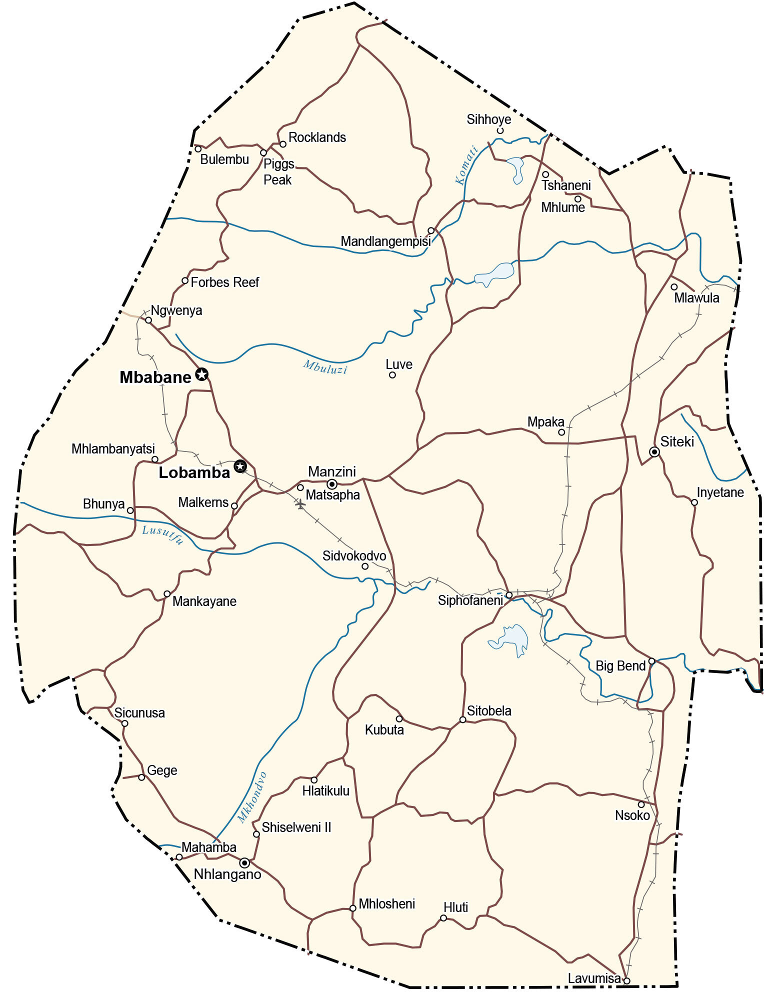

Eswatini is a tiny, landlocked country located in Southern Africa. It borders two other countries. Mozambique is to the east and South Africa wraps around Eswatini from the north to the southeast. Eswatini is a bit different because it has two capital cities.
First, Mbabane serves as the executive capital. But Lobamba, just 15 kilometers away, is the royal and legislative capital of Eswatini. It was formerly known as Swaziland. But in 2018, the official name was changed, which means “place of the Swazi” in the Swazi language.
Go back home